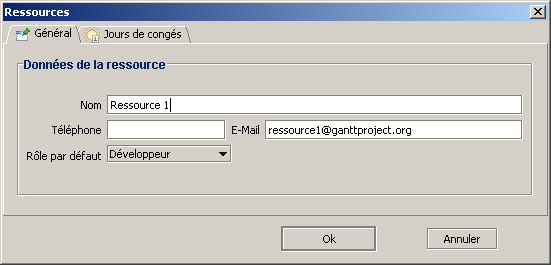

Ajout, suppression de ressources
Ajout
Il existe plusieurs moyens pour ajouter des ressources à votre projet :
- bouton
 dans la barre d'outils lors que vous êtes dans la vue Ressources ;
dans la barre d'outils lors que vous êtes dans la vue Ressources ;
- menu Ressources, puis Nouvelle ressource et le raccourcis clavier Ctrl+H associé ;
- menu contextuel du tableau des ressources ;
- double-clic sous le tableau des ressources (dans la zone blanche).
Lorsque vous créez une ressource, une fenêtre s'ouvre pour saisir les informations de la ressource :

Suppression
De la même manière que pour la création des ressources, il y a plusieurs moyens pour en supprimer :
- bouton
 dans la barre d'outils ;
dans la barre d'outils ;
- menu Ressources, puis Supprimer ressource ;
- menu contextuel du tableau des ressource ;
- appuyer sur Suppr lorsqu'une ressource est sélectionnée.